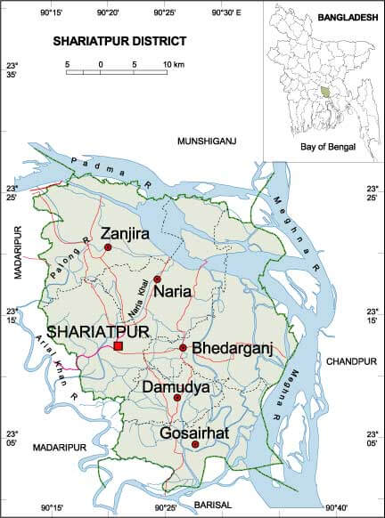

শরীয়তপুর জেলার মানচিত্র

শরীয়তপুর জেলা
বৃটিশ বিরোধী তথা ফরায়েজী আন্দোলনের অন্যতম নেতা হাজী শরীয়ত উল্লাহর নামানুসারে শরীয়তপুরের নামকরণ করা হয়। ১৯৮৪ সালে ১লা মার্চ শরীয়তপুর জেলা শুভ উদ্বোধন করেন তৎকালীন তথ্য মন্ত্রী জনাব নাজিম উদ্দিন হাসিম।
বিখ্যাত খাবার
বিবিখানা পিঠা
বিখ্যাত স্থান
সুরেশ্বর দরবার শরীফ - নড়িয়া উপজেলার সুরেশ্বর
বুড়ির হাট মসজিদ - ডামুড্যা উপজেলার বুড়ির হাট
বুড়ির হাট মুন্সী বাড়ী - ডামুড্যা উপজেলার রুদ্রকর ইউনিয়ন
লাকার্তা শিকদার বাড়ি - ভেদরগঞ্জ উপজেলার ছয়গাঁও ইউনিয়ন
পন্ডিতসার
রুদ্রকর মঠ - সদর উপজেলার রুদ্রকর ইউনিয়ন
মগর
শিবলিঙ্গ - নড়িয়া উপজেলার ভোজেশ্বর ইউনিয়ন
মহিষারের দীঘি - দক্ষিণ বিক্রমপুর
রাজনগর
কুরাশি
হাটুরিয়া জমিদার বাড়ি - গোসাইরহাট উপজেলা
রাম সাধুর আশ্রম - নড়িয়া উপজেলার ডিঙ্গামানিক ইউনিয়ন
মানসিংহের বাড়ী - নড়িয়া উপজেলায় ফতেজংগপুর
ধানুকার মনসা বাড়ি
মডার্ন ফ্যান্টাসি কিংডম-নড়িয়ার কেদারপুর ইউনিয়নের কলুকাঠি নামক গ্রামে এটি আবস্তিত।এখানে রয়েছে বাংলাদেশের সবচেয়ে বড় মাছের একুরিয়াম ।তাছারা এখানে চিড়িয়াখানা সহ শিশুদের বিনোদনের বিভিন্ন ব্যবস্থা রয়েছে।শরীয়তপুর জেলার একমাত্র বিনোদন কেন্দ্র হিসেবে সকলের কাছে পরিচিত।